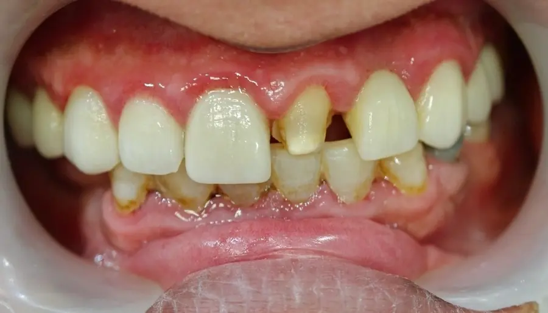
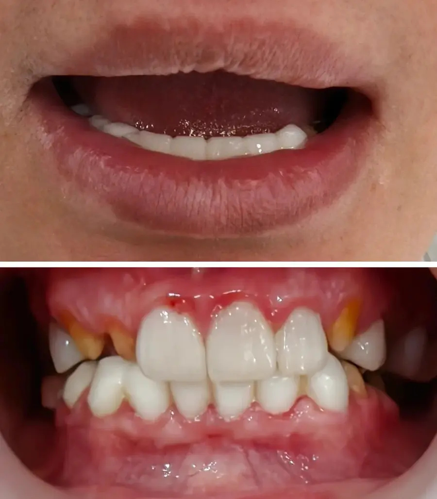

نسخه استخراجشده؛ ترجمه یا تأیید علمی انجام نشده است. وضعیت: captured
لمینت دندان یک بالا سمت چپ بیمار بارها افتاده است. کار را جای دیگری انجام دادهاند. بیمار فکر میکند دندانپزشک خودش چسباندن لمینت را بلد نیست و میخواهد تو با هر هزینهای که لازم است آن را سمان کنی. مشکل واقعاً سمان است؟

وضعیت دندان و سیستم جونده بهشدت وخیم است و چند خطای فاحش و اساسی دیده میشود:
پس افتادن مکرر نشانهی کمبود مهارت چسباندن نیست؛ نشانهی نقض پیششرطهای باند است.
رستوریشن شخص دیگری را نچسبان. با گرفتن یک هزینهی ناچیز برای سمان، عملاً تمام مسئولیت و ریسک یک کار از پایه غلط به تو منتقل میشود و با اولین شکست، بیمار پزشک دوم را مقصر میداند.
درخواست جایگزین بیمار هم محکوم به شکست بود، به سه دلیل:
سمان کردن رستوریشن یک همکار دیگر لطف به بیمار نیست؛ پذیرفتن مسئولیت همهی خطاهای بیومکانیک (مثل فقدان ساپورت خلفی)، تراش نادرست و مشکلات پریودنتال اوست. باندینگ موفق محیطی ایزوله و عاری از التهاب و پوسیدگی میخواهد و آمادهسازی محیط بر انتخاب متریال تقدم دارد. فونداسیونی که از پایه ویران است با یک سمان خوب نجات پیدا نمیکند.
بیماری با تاریخچهی درمانهای ناموفق قبلی و آسیب روانی ناشی از آنها آمده است. در حالت استراحت و در اسمایل، tooth display از دندانهای بالا ندارد، و کیس ترکیبی از مشکلات زیبایی و فانکشنال است. اولین اقدام تو برای شروع درمان این بیمار چیست؟ این پرسش باز را با خودت نگه دار.

نوع سؤال: ساخت کلمه · 5 خانه
حروف منبع: م · ز · ت · ی · ی